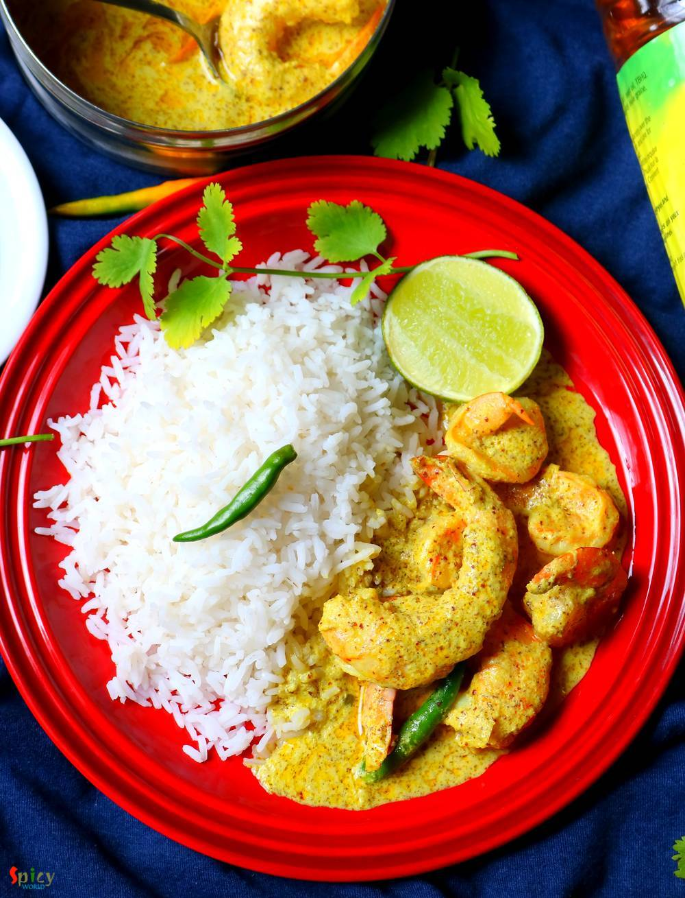

Simple and Easy Recipes
Sorshe Chingri Bhapa / Steamed Prawn in Mustard gravy
© 2016 Spicy World, Published on: Jan 27, 2020
Bhapa means steamed. There are so many fish curry recipes in Bengali cuisine which calls for 'mustard' / sorshe, this particular item is a jewel. Fresh flavor of mustard oil and green chilies goes so well with shrimp. With some steamed rice this 'sorshe chingri bhapa' tastes best. You can make this with fish fillet or paneer also. If you are a shrimp lover and also don't know about this dish, then trust me and give it a try ... you can thank me later !

Ingredients
- 15 pieces of cleaned and deveined prawns / shrimps.
- 2 Tablespoons of black mustard seeds.
- 2 Tablespoons of yellow mustard seeds.
- 2 Tablespoons of grated coconut.
- 2 Tablespoons of poppy seeds.
- 2 Teaspoons of turmeric powder.
- 2 Tablespoons of yogurt.
- Salt and sugar.
- 3 Tablespoons of mustard oil.
- 5 green chilies.
- Water as required.


Steps
Soak black and yellow mustard seeds in water along with poppy seeds for 1 hour. Then add grated coconut, one green chili and some salt. Grind them with very little water.
Make a thick paste and take it out in a steel box or bowl which has a tight lid.
Add yogurt, turmeric powder, more salt and little sugar. Mix these with the paste really well.
Then add the shrimps, 4 slitted green chilies and the mustard oil. Mix well.
Cover the bowl and keep aside for an hour.
In a kadai or wok heat 1 cup of water.
When the water starts boiling place the steel box with tight lid into the water.
Boiling water should cover half of the bowl.
Cover the kadai and cook for 15 minutes on medium flame.
Take the box out from hot water very carefully.
Let it rest for 15 minutes then open it. Stir a little and serve hot.
Your sorshe chingri bhapa is ready ...
Serve this hot with some plain rice ...
")